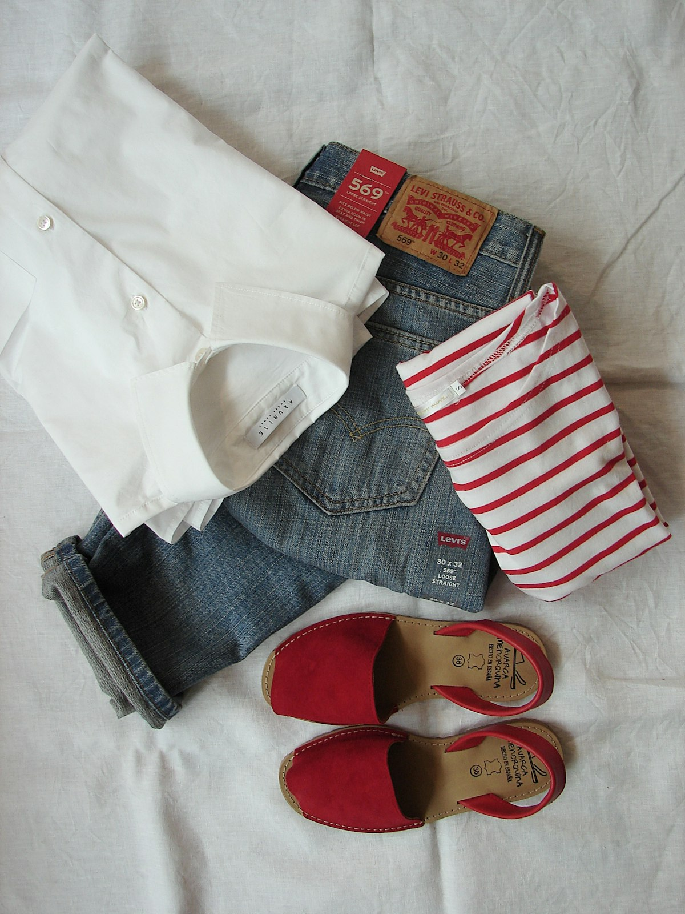

Bespoke CashmerePure Mongolian Cashmere Lounger
Featherlight two-ply 15-micron cashmere with hand-linked seamless toes and soft rolled cuffs for luxurious fireside comfort.
Price: $110 / Pair
Availability: In Stock